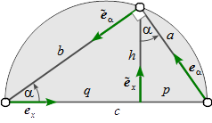

The Right Triangle
Base Geometry

Let the right triangle hypothenuse be aligned with the coordinate system x-axis .
The vector loop closure equation running counter-clockwise then reads
a e α + b e ~ α + c e x = 0 a{\bold e}_\alpha + b\tilde{\bold e}_\alpha + c{\bold e}_x = \bold 0 a e α + b e ~ α + c e x = 0 (1) with
e α = ( cos α sin α ) a n d e ~ α = ( − sin α cos α ) {\bold e}_\alpha = \begin{pmatrix}\cos\alpha\\ \sin\alpha\end{pmatrix} \quad and \quad {\tilde\bold e}_\alpha = \begin{pmatrix}-\sin\alpha\\ \cos\alpha\end{pmatrix} e α = ( cos α sin α ) a n d e ~ α = ( − sin α cos α ) Resolving for the hypothenuse part c e x c{\bold e}_x c e x
− c e x = a e α + b e ~ α -c{\bold e}_x = a{\bold e}_\alpha + b\tilde{\bold e}_\alpha − c e x = a e α + b e ~ α and squaring
finally results in the Pythagorean theorem (2)
c 2 = a 2 + b 2 c^2 =
a^2 +
b^2 c 2 = a 2 + b 2 (2)
More Triangle Stuff
Introducing the hypothenuse segments p = a ⋅ e x p={\bold a}\cdot{\bold e}_x p = a ⋅ e x q = b ⋅ e x q={\bold b}\cdot{\bold e}_x q = b ⋅ e x
segment p
segment q
height h
area
c p = a 2 cp = a^2 c p = a 2 c q = b 2 cq = b^2 c q = b 2 p q = h 2 pq = h^2 p q = h 2 a b = c h ab = ch a b = c h
This is a coordinate point ( 3 , 6 ) \lparen 3, 6 \rparen ( 3 , 6 ) [ x , y ] \lbrack x, y \rbrack [ x , y ]
a = b + c d + e = f \begin{aligned} a&=b+c \\ d+e&=f \end{aligned} a d + e = b + c = f 10 x + 3 y = 2 3 x + 13 y = 4 \begin{alignedat}{2}
10&x+ &3&y = 2 \\
3&x+&13&y = 4
\end{alignedat} 1 0 3 x + x + 3 1 3 y = 2 y = 4 3 22 − 2 2 3^{22}-2_{2} 3 2 2 − 2 2
a ~ \tilde{a} a ~
a x 2 + b x + c = 0 ⇒ x = − b ± b 2 − 4 a c 2 a a x^{2} + b x + c = 0 \hspace{0.5in} \Rightarrow \hspace{0.5in} x = \frac{-b \pm \sqrt{b^{2}-4ac}}{2a} a x 2 + b x + c = 0 ⇒ x = 2 a − b ± b 2 − 4 a c 3 x 2 − 8 = 100 3x^{2} - 8 = 100 3 x 2 − 8 = 1 0 0 [ 3 ( x 2 ) ] − 8 = 100 \lbrack\; 3 \lparen x^{2} \rparen \; \rbrack - 8 = 100 [ 3 ( x 2 ) ] − 8 = 1 0 0 [ 3 ( x 2 ) ] − 8 = 100 \lbrack\;\; 3\ \lparen\; x^{2}\; \rparen \;\; \rbrack - 8 = 100 [ 3 ( x 2 ) ] − 8 = 1 0 0 [ 3 ( x 2 ) ] − 8 = 100 \lbrack\quad 3 \lparen x^{2} \rparen \quad \rbrack - 8 = 100 [ 3 ( x 2 ) ] − 8 = 1 0 0 3 x 2 = 100 + 8 ( o r 108 ) 3x^{2} = 100 + 8 \hspace{0.5in} \lparen or \hspace{0.05in} 108 \rparen 3 x 2 = 1 0 0 + 8 ( o r 1 0 8 ) x 2 = 108 3 ( o r 36 ) x^{2} = {108 \over 3} \hspace{0.5in} \lparen or \hspace{0.05in} 36 \rparen x 2 = 3 1 0 8 ( o r 3 6 ) x = 36 ( o r ± 6 ) x = \sqrt{36} \hspace{0.5in} \lparen or \hspace{0.05in} \pm 6 \rparen x = 3 6 ( o r ± 6 ) ( a b ) − 2 = 1 ( a b ) 2 {\left( {ab} \right)^{ - 2}} = \frac{1}{{{{\left( {ab} \right)}^2}}} ( a b ) − 2 = ( a b ) 2 1 Inline mode: ∑ i = 0 n i 2 = ( n 2 + n ) ( 2 n + 1 ) 6 \hspace{0.5in}\sum_{i=0}^n i^2 = \frac{(n^2+n)(2n+1)}{6} ∑ i = 0 n i 2 = 6 ( n 2 + n ) ( 2 n + 1 )
Display mode: ∑ i = 0 n i 2 = ( n 2 + n ) ( 2 n + 1 ) 6 \sum_{i=0}^n i^2 = \frac{(n^2+n)(2n+1)}{6} i = 0 ∑ n i 2 = 6 ( n 2 + n ) ( 2 n + 1 )
x_i^2: x i 2 x_i^2 x i 2
1 0 10 10^{10} 1 0 1 0
x y z {x^y}^z x y z
( x y 3 ) (\frac{\sqrt x}{y^3}) ( y 3 x )
( x y 3 ) \left(\frac{\sqrt x}{y^3}\right) ( y 3 x )
( ( ( ( ( x ) ) ) ) ) \Biggl(\biggl(\Bigl(\bigl((x)\bigr)\Bigr)\biggr)\Biggr) ( ( ( ( ( x ) ) ) ) )
∑ i = 0 ∞ i 2 \sum_{i=0}^\infty i^2 ∑ i = 0 ∞ i 2
a b \frac ab b a
a + 1 b + 1 \frac{a+1}{b+1} b + 1 a + 1
a + 1 b + 1 {a+1\over b+1} b + 1 a + 1
x = a 0 + 1 2 a 1 + 2 2 a 2 + 3 2 a 3 + 4 4 a 4 + ⋯ x = a_0 + \cfrac{1^2}{a_1
+ \cfrac{2^2}{a_2
+ \cfrac{3^2}{a_3 + \cfrac{4^4}{a_4 + \cdots}}}} x = a 0 + a 1 + a 2 + a 3 + a 4 + ⋯ 4 4 3 2 2 2 1 2 x 3 y 2 \sqrt{x^3y^2} x 3 y 2
x y 3 \sqrt[3]{\frac xy} 3 y x
lim x → 0 \lim_{x\to 0} lim x → 0
foo ( x ) \operatorname{foo}(x) f o o ( x )
a ≡ b ( m o d n ) a\equiv b\pmod n a ≡ b ( m o d n )
{ x ∈ s ∣ x is extra large } \{x\in s\mid x\text{ is extra large}\} { x ∈ s ∣ x is extra large }
[ 1 x x 2 1 y y 2 1 z z 2 ]
\begin{bmatrix}
1 & x & x^2 \\
1 & y & y^2 \\
1 & z & z^2 \\
\end{bmatrix}
⎣ ⎢ ⎡ 1 1 1 x y z x 2 y 2 z 2 ⎦ ⎥ ⎤ [ 1 2 3 4 ] \begin{bmatrix}1&2\\3&4\\ \end{bmatrix} [ 1 3 2 4 ] [ 1 2 3 4 5 6 ] \left[\begin{array}{cc|c}
1&2&3\\
4&5&6
\end{array}\right]
[ 1 4 2 5 3 6 ] [ 1 2 3 4 5 6 ] \left[\begin{array}{cc|c}
1 & 2 & 3 \\
4 & 5 & 6 \\
\end{array}\right]
[ 1 4 2 5 3 6 ] ε \varepsilon ε
f ( n ) = { n / 2 , if n is even 3 n + 1 , if n is odd
f(n) =
\begin{cases}
n/2, & \text{if n is even} \\
3n+1, & \text{if n is odd}
\end{cases} f ( n ) = { n / 2 , 3 n + 1 , if n is even if n is odd f ( n ) = { n / 2 , if n is even 3 n + 1 , if n is odd
f(n) =
\begin{cases}
n/2, & \text{if}\ n \ \text{is even} \\
3n+1, & \text{if}\ n \ \text{is odd}
\end{cases} f ( n ) = { n / 2 , 3 n + 1 , if n is even if n is odd n Left Center Right 1 0.24 1 125 2 − 1 189 − 8 3 − 20 2000 1 + 10 i
\begin{array}{c|lcr}
n & \text{Left} & \text{Center} & \text{Right} \\
\hline
1 & 0.24 & 1 & 125 \\
2 & -1 & 189 & -8 \\
3 & -20 & 2000 & 1+10i
\end{array}
n 1 2 3 Left 0 . 2 4 − 1 − 2 0 Center 1 1 8 9 2 0 0 0 Right 1 2 5 − 8 1 + 1 0 i min 0 1 2 3 0 0 0 0 0 1 0 1 1 1 2 0 1 2 2 3 0 1 2 3 max 0 1 2 3 0 0 1 2 3 1 1 1 2 3 2 2 2 2 3 3 3 3 3 3 Δ 0 1 2 3 0 0 1 2 3 1 1 0 1 2 2 2 1 0 1 3 3 2 1 0
% outer vertical array of arrays
\begin{array}{c}
% inner horizontal array of arrays
\begin{array}{cc}
% inner array of minimum values
\begin{array}{c|cccc}
\text{min} & 0 & 1 & 2 & 3\\
\hline
0 & 0 & 0 & 0 & 0\\
1 & 0 & 1 & 1 & 1\\
2 & 0 & 1 & 2 & 2\\
3 & 0 & 1 & 2 & 3
\end{array}
&
% inner array of maximum values
\begin{array}{c|cccc}
\text{max}&0&1&2&3\\
\hline
0 & 0 & 1 & 2 & 3\\
1 & 1 & 1 & 2 & 3\\
2 & 2 & 2 & 2 & 3\\
3 & 3 & 3 & 3 & 3
\end{array}
\end{array}
\\
% inner array of delta values
\begin{array}{c|cccc}
\Delta&0&1&2&3\\
\hline
0 & 0 & 1 & 2 & 3\\
1 & 1 & 0 & 1 & 2\\
2 & 2 & 1 & 0 & 1\\
3 & 3 & 2 & 1 & 0
\end{array}
\end{array}
min 0 1 2 3 0 0 0 0 0 1 0 1 1 1 2 0 1 2 2 3 0 1 2 3 max 0 1 2 3 0 0 1 2 3 1 1 1 2 3 2 2 2 2 3 3 3 3 3 3 Δ 0 1 2 3 0 0 1 2 3 1 1 0 1 2 2 2 1 0 1 3 3 2 1 0 B a d B e t t e r { x ∣ x 2 ∈ Z } { x ∣ x 2 ∈ Z }
\begin{array}{cc}
\mathrm{Bad} & \mathrm{Better} \\
\hline \\
\{x|x^2\in\Bbb Z\} & \{x\mid x^2\in\Bbb Z\} \\
\end{array}
B a d { x ∣ x 2 ∈ Z } B e t t e r { x ∣ x 2 ∈ Z } { a 1 x + b 1 y + c 1 z = d 1 a 2 x + b 2 y + c 2 z = d 2 a 3 x + b 3 y + c 3 z = d 3
\left\{
\begin{array}{c}
a_1x+b_1y+c_1z=d_1 \\
a_2x+b_2y+c_2z=d_2 \\
a_3x+b_3y+c_3z=d_3
\end{array}
\right.
⎩ ⎪ ⎨ ⎪ ⎧ a 1 x + b 1 y + c 1 z = d 1 a 2 x + b 2 y + c 2 z = d 2 a 3 x + b 3 y + c 3 z = d 3 { a 1 x + b 1 y + c 1 z = d 1 + e 1 a 2 x + b 2 y = d 2 a 3 x + b 3 y + c 3 z = d 3
\left\{
\begin{aligned}
a_1x+b_1y+c_1z &=d_1+e_1 \\
a_2x+b_2y&=d_2 \\
a_3x+b_3y+c_3z &=d_3
\end{aligned}
\right.
⎩ ⎪ ⎪ ⎨ ⎪ ⎪ ⎧ a 1 x + b 1 y + c 1 z a 2 x + b 2 y a 3 x + b 3 y + c 3 z = d 1 + e 1 = d 2 = d 3 { a 1 x + b 1 y + c 1 z = d 1 a 2 x + b 2 y + c 2 z = d 2 a 3 x + b 3 y + c 3 z = d 3 \begin{cases}
a_1x+b_1y+c_1z=d_1 \\[2ex]
a_2x+b_2y+c_2z=d_2 \\[2ex]
a_3x+b_3y+c_3z=d_3
\end{cases}
⎩ ⎪ ⎪ ⎪ ⎪ ⎪ ⎨ ⎪ ⎪ ⎪ ⎪ ⎪ ⎧ a 1 x + b 1 y + c 1 z = d 1 a 2 x + b 2 y + c 2 z = d 2 a 3 x + b 3 y + c 3 z = d 3 { 0 = c x − a x 0 − d x 0 ( c x − a x 0 ) ⋅ d x 0 ∥ d x 0 ∥ 2 + c x − a x 1 − d x 1 ( c x − a x 1 ) ⋅ d x 1 ∥ d x 1 ∥ 2 0 = c y − a y 0 − d y 0 ( c y − a y 0 ) ⋅ d y 0 ∥ d y 0 ∥ 2 + c y − a y 1 − d y 1 ( c y − a y 1 ) ⋅ d y 1 ∥ d y 1 ∥ 2 \left\{ \begin{array}{l}
0 = c_x-a_{x0}-d_{x0}\dfrac{(c_x-a_{x0})\cdot d_{x0}}{\|d_{x0}\|^2} + c_x-a_{x1}-d_{x1}\dfrac{(c_x-a_{x1})\cdot d_{x1}}{\|d_{x1}\|^2} \\[2ex]
0 = c_y-a_{y0}-d_{y0}\dfrac{(c_y-a_{y0})\cdot d_{y0}}{\|d_{y0}\|^2} + c_y-a_{y1}-d_{y1}\dfrac{(c_y-a_{y1})\cdot d_{y1}}{\|d_{y1}\|^2} \end{array} \right.
⎩ ⎪ ⎪ ⎪ ⎨ ⎪ ⎪ ⎪ ⎧ 0 = c x − a x 0 − d x 0 ∥ d x 0 ∥ 2 ( c x − a x 0 ) ⋅ d x 0 + c x − a x 1 − d x 1 ∥ d x 1 ∥ 2 ( c x − a x 1 ) ⋅ d x 1 0 = c y − a y 0 − d y 0 ∥ d y 0 ∥ 2 ( c y − a y 0 ) ⋅ d y 0 + c y − a y 1 − d y 1 ∥ d y 1 ∥ 2 ( c y − a y 1 ) ⋅ d y 1